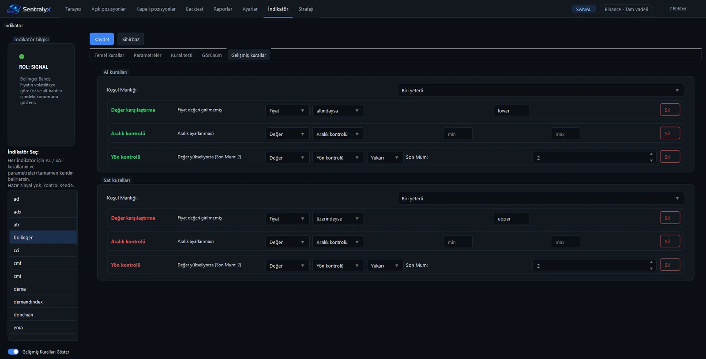
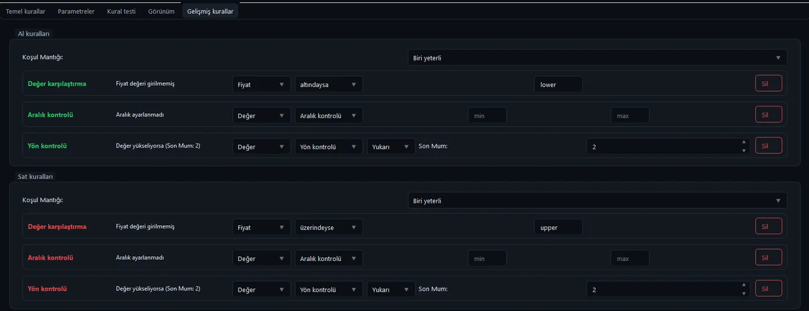

Indicator
Indicator Settings & Signal Rules
Define BUY/SELL rules and parameters for 30 indicators yourself. Combine rules such as value comparison, range check and direction check. No ready-made signals, you are in control.

Real app screen, captured in virtual mode.
Every indicator follows your rule
An indicator produces a BUY, SELL or NONE result according to your rules.
Pick an indicator
Pick an indicator from the list on the left; its role and a short description are shown. For example, Bollinger Bands show where the price sits within the bands.
- ADX, ATR, Bollinger, CCI, CMF, DEMA, Donchian, EMA and more
- Indicator info and role
- Basic and advanced rule views
BUY and SELL rules
Build separate rule sets for BUY and SELL. Choose the condition logic (e.g. any one is enough) and the rule types.
- Value comparison (e.g. price below the lower band)
- Range check (min / max)
- Direction check (rising/falling over the last N candles)

Rule test and parameters
Review your settings with the parameters, rule test and view tabs, then use them in a strategy.
- Basic rules and parameters
- Rule test tab
- Use in the strategy wizard

What's in the indicator editor?
You define exactly how a signal forms.
30 indicators
Trend, momentum, band/channel and volume indicators.
Value comparison
Is the price or value below/above a given level?
Range check
Is the value within the min-max range you set?
Direction check
Is the value rising or falling over the last N candles?
Condition logic
Combine rules with logic such as "any one is enough".
Wizard
Start building rules with the wizard.
Frequently asked questions
Does it come with ready-made BUY/SELL signals?
No. There are no ready-made signals; you define the BUY/SELL rule and parameters for each indicator.
How many indicators are there?
Rules and parameters can be defined for 30 indicators in the indicator editor.
How do I test my rules?
Use the rule test tab to review your settings, then try the strategy with backtests and in virtual mode.
Related pages
Try your strategy in virtual mode today
Download the app, build your strategy and see how it works without using real money.